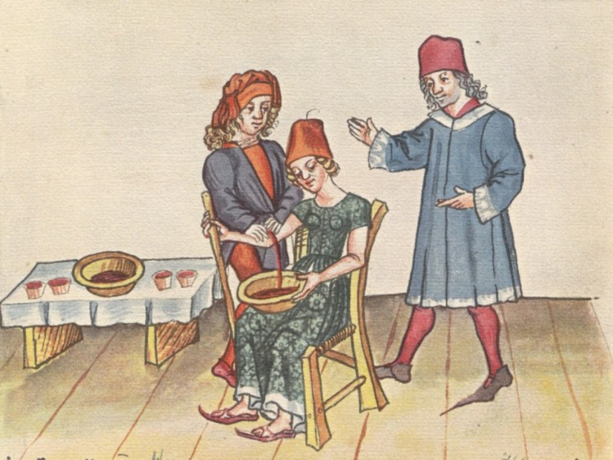
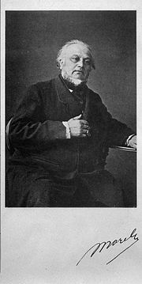
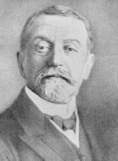

Schizofrenie is een mentale stoornis gekenmerkt door een reeks symptomen, waaronder hallucinaties, wanen, verstoorde gedachten en abnormaal gedrag. Het is al meer dan een eeuw erkend als een afzonderlijke ziekte, maar de geschiedenis gaat veel verder terug.
De oude Grieken geloofden dat geestesziekten werden veroorzaakt door een onevenwichtigheid van lichaamsvloeistoffen, of "humoren", en schreven behandelingen voor zoals aderlaten, zuivering en braakmiddelen om het evenwicht te herstellen. De symptomen van schizofrenie werden echter niet duidelijk onderscheiden van die van andere geestesziekten op dat moment.

In de 19e eeuw werden inrichtingen en ziekenhuizen opgericht om mensen met geestesziekten te behandelen, en de studie van geestesstoornissen werd wetenschappelijker.

De Franse psychiater Benedict Morel was een van de eersten die een specifieke vorm van geestesziekte beschreef die gekenmerkt werd door terugtrekking uit de werkelijkheid, wat hij "dementia praecox" noemde. Het was echter de Duitse psychiater Emil Kraepelin die in 1908 de term "schizofrenie" bedacht om een groep gerelateerde stoornissen te beschrijven die onder andere dementia praecox omvatte.
humorenn
Kraepelin geloofde dat schizofrenie een hersenaandoening was en hij identificeerde specifieke symptomen en patronen van aanvang en progressie die het onderscheidden van andere geestesziekten. Zijn werk was invloedrijk bij het vaststellen van schizofrenie als een afzonderlijke diagnose en zijn classificatiesysteem werd gebruikt tot de jaren 1980.benadict morel
 In recente jaren heeft onderzoek zich gericht op het begrijpen van de onderliggende oorzaken van schizofrenie en het ontwikkelen van effectievere behandelingen. Studies hebben genetische en omgevingsrisicofactoren geïdentificeerd en ontwikkelingen in hersenbeeldvorming hebben structurele en functionele verschillen aangetoond in de hersenen van mensen met schizofrenie. Nieuwere medicijnen met minder bijwerkingen zijn ook ontwikkeld en psychologische therapieën zoals cognitieve gedragstherapie en familie-interventies zijn effectief gebleken bij het beheersen van de ziekte.arnold pick
De term dementia praecox werd in 1891 gebruikt door Arnold Pick in een verslag van een geval van een psychotische stoornis. In 1893 heeft Emil Kraepelin in de classificatie van psychiatrische stoornissen een breed nieuw onderscheid geïntroduceerd tussen dementia praecox en stemmingsstoornissen (onder de naam manische depressie; hieronder werd zowel unipolaire als bipolaire depressie verstaan). Kraepelin was van mening dat dementia praecox primair een hersenaandoening was, en meer specifiek een vorm van dementie, die zich onderscheidde van andere vormen van dementie zoals de ziekte van Alzheimer, die vaak op latere leeftijd ontstaan